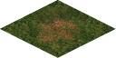

Plains
Plains are the only type of terrain on Mars that are suitable for
agriculture. Giving barely enough food to feed the population
working on it, plains are preferred regions to build new colonies.
This type of terrain has no silica or iron deposits. In battle, it
will not provide any advantages to defender.
Improvements:

| Movement cost |
1 |
| Defence percentage |
0 |
| Resource |
Production |
| Food |
8 |